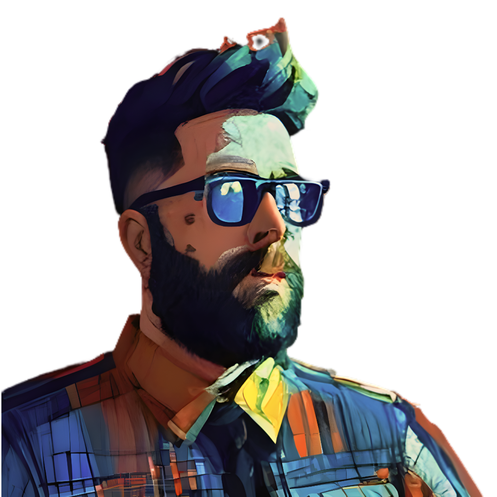

Mind of Divergence
Welcome to Mind of Divergence, where I, Kristopher Williams (MoD), share my journey through the realms of AI art.
My approach to creativity is guided by a philosophy of seeing things differently, embracing the ever-changing
landscape of self-discovery. My artwork, ranging from AI-generated pieces sold in local shops to unique postcards
shared worldwide via Postcrossing, reflects my diverse interests and explorative spirit. Based in Mukilteo, WA,
I invite you to explore my world of art. Discover more and connect with me through my
Instagram or at
kristopher.b.williams@gmail.com.